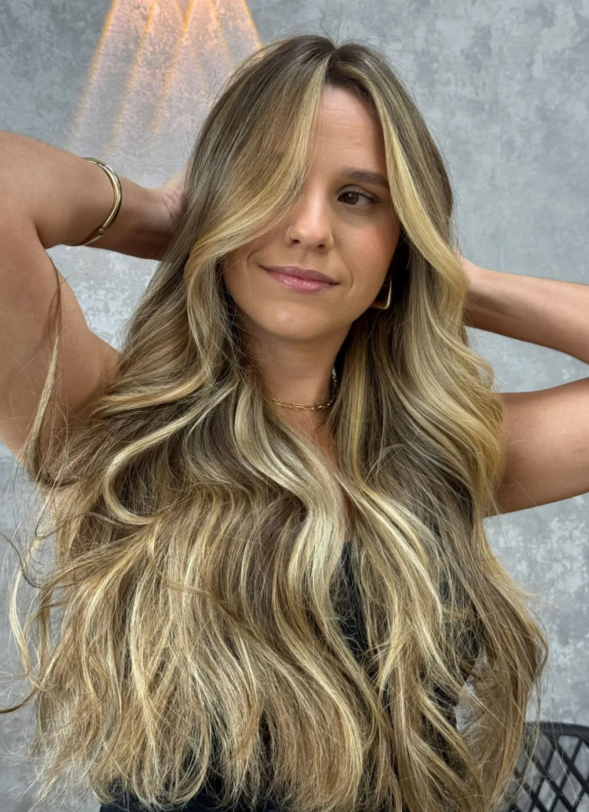
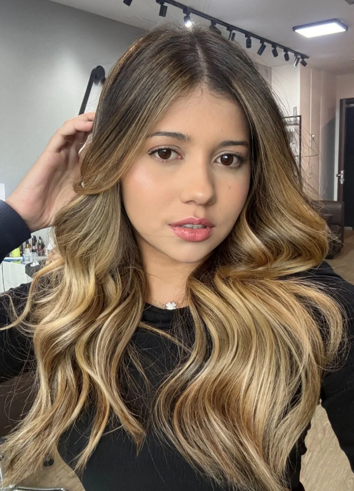
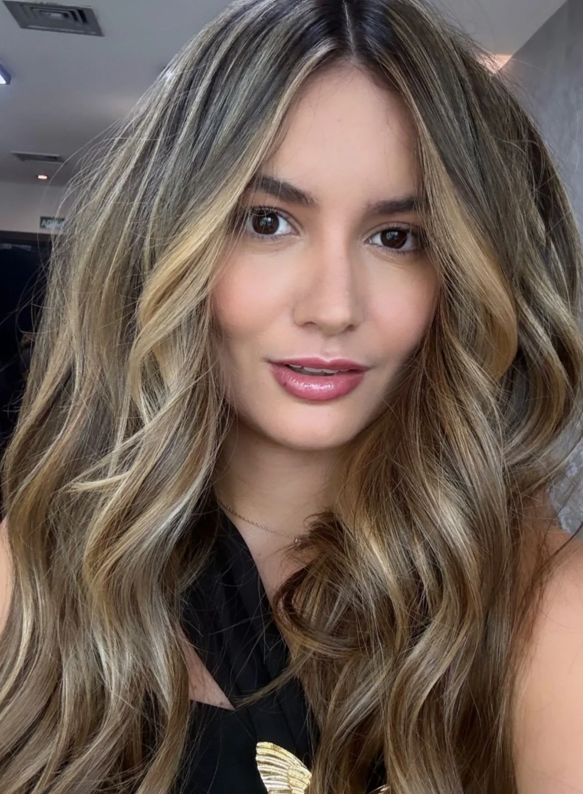
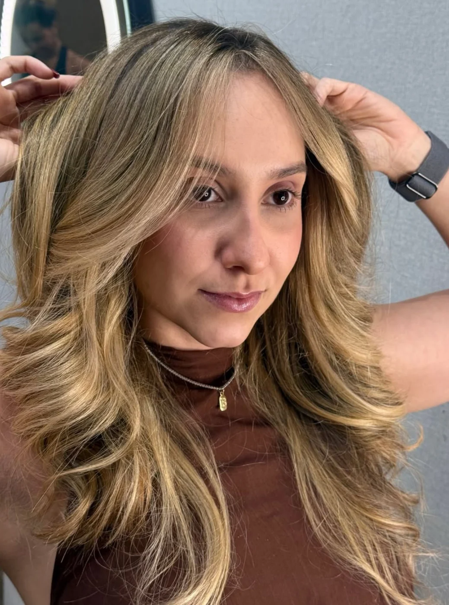
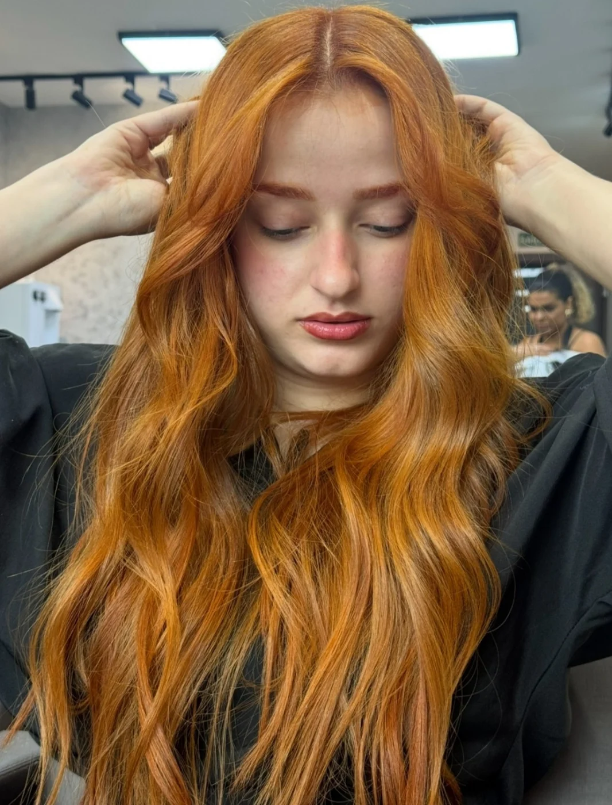
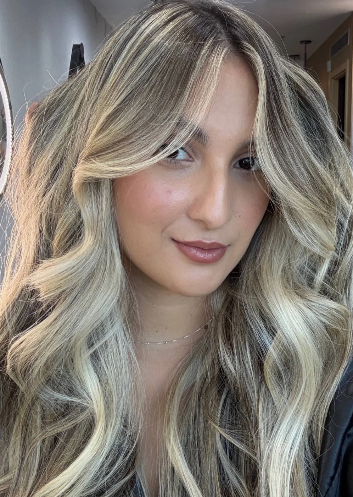
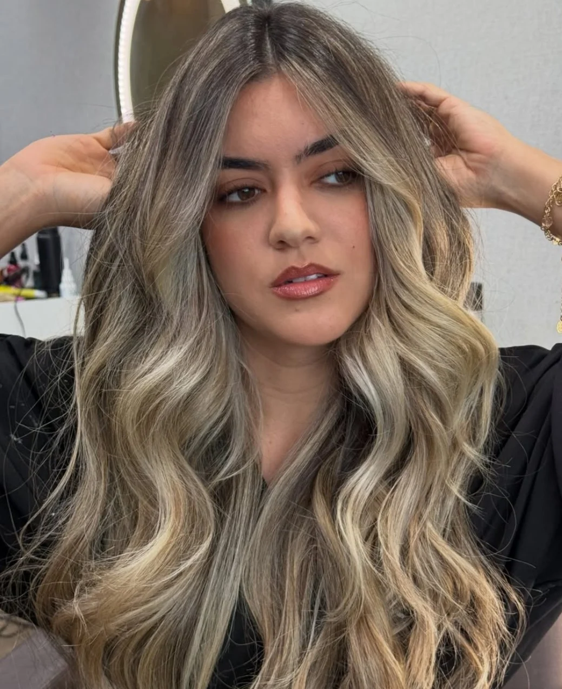
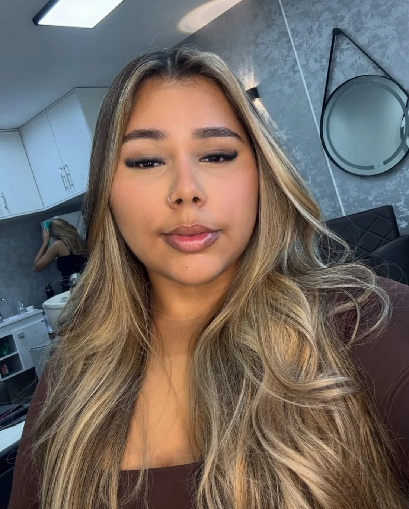

Robson Lopes Beleza, técnica e em cada detalhe.
Cabeleireiro Especialista em Transformações & Loiros
Cortes, tratamentos e transformações pensados para revelar a sua melhor versão — com um olhar especial para a arte dos cabelos loiros.
-
01
Cortes
Desenho de corte que respeita textura, rosto e rotina.
-
02
Tratamentos
Reconstrução, brilho e saúde do fio antes de qualquer mudança.
-
03
Transformações
Mudanças de cor, forma e estilo conduzidas com planejamento.
-
04
Assinatura
Loiros
Tonalidade, mechas e finalização — a especialidade da casa.
Técnica para transformar. Sensibilidade para valorizar.
Robson Lopes dedica seu trabalho à arte de transformar cabelos através de técnica, estilo e leitura de personalidade. Sua atuação passa por cortes, tratamentos e diferentes tipos de transformação, sempre partindo das características reais de cada cliente — o tipo de fio, a rotina, o rosto e o que ela deseja ver no espelho.
Entre suas especialidades, os cabelos loiros ocupam um espaço próprio. Da escolha da tonalidade à construção das mechas e à finalização, cada etapa é conduzida para chegar a um resultado elegante, equilibrado e feito sob medida — e que continue bonito nas semanas seguintes.
Um olhar especial para os loiros.
O loiro é a cor que menos perdoa pressa. Ele exige entender o histórico do fio antes de clarear, escolher o tom certo para a pele de cada cliente e saber exatamente onde a luz precisa cair. Foi essa exigência que fez o loiro se tornar, ao longo dos anos, a assinatura do trabalho do Robson.
-
Diagnóstico do fio
Histórico de química, porosidade e resistência definem até onde é seguro ir — e em quantas etapas.
-
Construção da luz
Mechas desenhadas de acordo com o corte e o formato do rosto, para o loiro crescer bonito em vez de marcar raiz.
-
Tonalização e finalização
O tom exato entre o frio e o dourado, com tratamento e finalização que devolvem brilho e movimento ao fio.
Ser referência em loiros não estreita o trabalho: é a mesma exigência técnica aplicada a cortes, tratamentos e a qualquer transformação.

Trabalho autoral Loiro iluminado com raiz esfumada
Resultados que falam por si.
Cada cabelo carrega uma história — e um ponto de partida diferente. Abaixo, alguns dos trabalhos realizados por Robson Lopes: cortes, tratamentos, colorações e, com presença especial, os loiros que se tornaram sua assinatura.









A mesma cliente, dois momentos.
Arraste o divisor para ver a transformação por inteiro — mesmo enquadramento, mesma luz, sem edição entre uma foto e outra.
Comparações só entram no site quando as duas fotos pertencem ao mesmo atendimento.
O que acontece na cadeira do Robson.
Cinco frentes de trabalho que se combinam de acordo com o que cada cabelo pede — e com o que cada cliente quer ver no espelho.
-
Cortes
Cortes personalizados de acordo com o estilo, o formato do rosto e as características do cabelo.
-
Loiros & Mechas Assinatura
Transformações de tonalidade, iluminação, mechas e construção de loiros personalizados.
-
Transformações
Mudanças pensadas para criar uma nova identidade visual respeitando a saúde dos fios.
-
Tratamentos
Cuidados voltados à recuperação, à manutenção, ao brilho e à vitalidade do cabelo.
-
Finalização
Acabamento profissional que valoriza textura, movimento e o resultado final.
A lista de procedimentos, valores e tempos de atendimento é definida na avaliação presencial, caso a caso.
A arte por trás de um loiro perfeito.
Loiro bonito não é um produto — é uma sequência de decisões. Estas são as que orientam cada atendimento.
Nenhum resultado é prometido antes da avaliação: o ponto de partida de cada cabelo define o que é possível, em quanto tempo e em quantas etapas.
Tonalidade
O tom certo nasce do encontro entre a pele, os olhos e o cabelo — não de uma referência copiada.
Profundidade
Manter partes mais fechadas é o que impede o loiro de ficar chapado e sem dimensão.
Contraste
A diferença calculada entre luz e base é o que dá relevo ao movimento do cabelo.
Iluminação
Onde a luz é colocada muda a leitura do rosto inteiro, não só a cor do fio.
Harmonia
O loiro precisa conversar com o corte, com a textura e com o dia a dia de quem usa.
Saúde dos fios
Clarear é um processo. Respeitar o limite do cabelo em cada etapa é parte da técnica.
Personalização
Duas clientes com o mesmo tom de referência raramente recebem a mesma construção.
Trabalhos autorais
Uma seleção em ritmo editorial. Clique em qualquer imagem para ver em tela cheia.
O que dizem as clientes
Esta área está pronta para receber avaliações reais — texto, primeiro nome da cliente e, se houver, a nota do Google. Nenhum depoimento foi criado artificialmente.
Falar com o RobsonSeu próximo visual começa aqui.
Converse diretamente com Robson e encontre o melhor caminho para o resultado que você deseja.